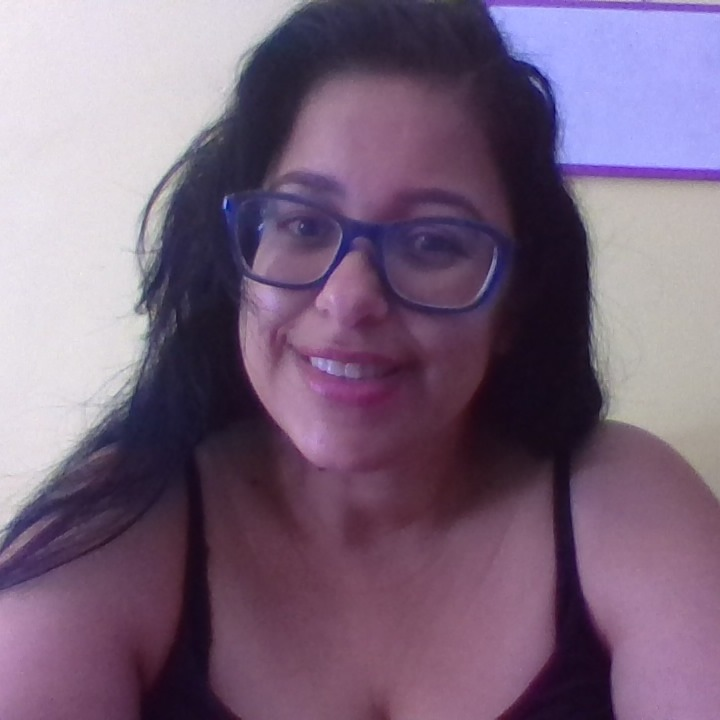

Conhecimento
Sou surda, fiquei surda com 1 ano e meio de idade por causa de meningite, nasci na cidade de Campinas SP, porém moro atualmente em Hortolândia.SP. Sou formada em Letras Libras pela UFSC, Polo Unicamp. Pós-Graduada em Especialista. Sou professora de Libras há 12 anos.